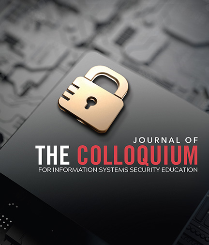

Welcome
I’m Ella Luedeke, a computer science major at the University of North Florida, researching cybersecurity education and formal analysis of exploitability. My work bridges technical systems and human understanding, with the goal of making cybersecurity more approachable and transparent.
Learn More About MeRecent News
-

Accepted to the 29th CISSE Journal & Conference
Developed an educational cybersecurity simulation for power grid systems through an NSF REU, teaching non-CS students about cyberattacks and resilience to be presented at the CISSE.
Link to CISSE Abstract